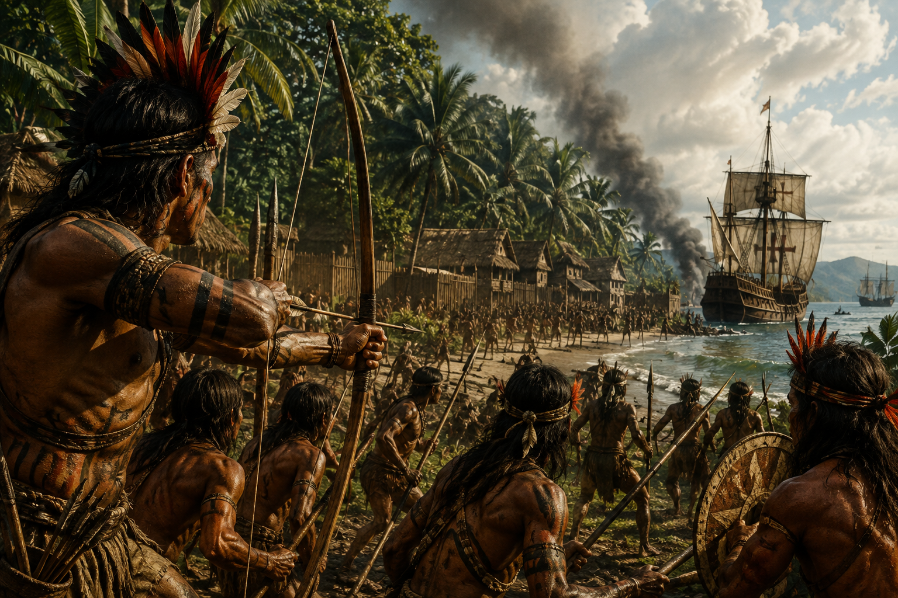

1539 – 1540
Resistência Indígena
Revolta dos Tupinambá
A Revolta dos Tupinambá (1545–1547) foi a primeira grande reação indígena contra o sistema de Capitanias Hereditárias na Bahia, motivada pela violenta escravização, pela perda de terras e pela imposição cultural dos colonizadores portugueses. Liderados por chefes locais, os guerreiros Tupinambá uniram-se em um ataque em massa que destruiu os engenhos de açúcar e a própria sede da capitania, forçando a fuga dos colonos e resultando na morte do donatário Francisco Pereira Coutinho.